Polymers
Polymer structure (molecular weight, tacticity, copolymers, crystallinity), the glass transition and melting, stress-strain and viscoelastic behaviour, and the classification and processing of thermoplastics, thermosets and elastomers.
Central idea: a polymer is a huge molecule made by joining many small units (monomers) with covalent bonds, and almost every property of a polymer follows from how those long chains are built and how they sit next to each other. The length of the chains (molecular weight), the position of the side groups (tacticity), the order of the units (sequence), the links between chains (branching and crosslinking) and the fraction of chains packed in order (crystallinity) set the two thermal transitions $T_g$ and $T_m$, the shape of the stress-strain curve and the time-dependent (viscoelastic) response. The same structural ideas sort polymers into thermoplastics (chains held by weak secondary bonds, they melt and can be reshaped), thermosets (a dense covalent network, they degrade instead of melting) and elastomers (a few crosslinks, very large elastic strains), and that classification decides how each one is processed into a part.
This page follows the two official sessions of Topic 9 slide by slide. Part I covers Session 19 (Polymeric Materials I: structure, crystallinity, thermal transitions and mechanical properties, Slides 1 to 50) and Part II covers Session 20 (Polymeric Materials II: classification of the families and polymer processing, Slides 1 to 38). Every section names the slides it comes from. The figures are copied from the slides as PNG crops, and each caption names its slide. Anything that is not printed on the slides is marked as an extension. The photographs with no study content (the collage of natural and synthetic products, the portraits of the history slide, the photographs of the injection machine and of injection-moulded parts) are not reproduced, and the video slides are listed at the end of Part II. The sheet Problems T9_Polymers (nine problems) is solved on the problems page of this topic.
Part I — Polymeric Materials I (Session 19, Slides 1–50)
§ 1 What is a polymer [Session 19 Slides 1-5]
Slide 1 is the agenda of the session: introduction, classification, polymerization mechanisms, molecular weight, structural aspects, crystallinity, thermal transitions ($T_m$ and $T_g$) and mechanical properties.
A monomer is a single atom, small molecule or molecular fragment. A polymer is an organic compound, natural or synthetic, with a high molecular weight, made of repetitive structural units: large chains formed by the covalent union of many monomer units, which is why a polymer molecule is also called a macromolecule. The name says it: poly ("many") plus mers ("parts"), many equal parts [Session 19 Slide 2].
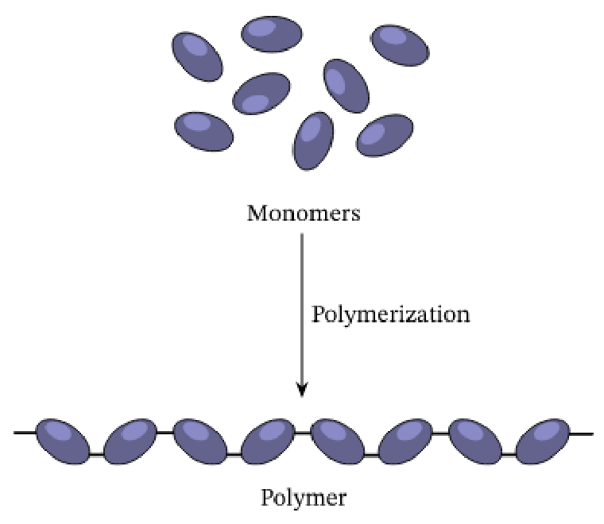
The IUPAC definition quoted on Slide 3 is: a substance composed of macromolecules or molecules of high relative molecular mass, whose structure essentially comprises the multiple repetition of units derived, actually or conceptually, from molecules of low relative molecular mass [Session 19 Slide 3].
Plastic or polymer? Polymers occur naturally or are produced artificially. Plastics are a specific type of polymer: all plastics are polymers, but not all polymers are plastics. A plastic is a polymer plus additives (fillers, lubricants and others) [Session 19 Slide 3]:
Humanity has used natural polymers from its origins: leather, wool, cotton, natural rubber, cellulose and starch (the photographs of the slide add pasta, wood, eggs, the latex of the rubber tree and the chitin of crustacean shells). Synthetic polymers came much later and today go into products of high consumption, tyres and packaging, and into automobiles, aeronautics, construction, wire coatings, tubes and boxes [Session 19 Slide 4]. The milestones of Slide 5 are:
| Year | Milestone |
|---|---|
| 1838 | Vulcanizing of natural rubber (Charles Goodyear) |
| 1846 | Cellulose nitrate |
| 1870 | Celluloid, made by nitration of cellulose |
| 1907 | Bakelite |
| 1920 | Macromolecular hypothesis (Staudinger, 1953 Nobel Prize) |
| 1926 | Polyvinyl chloride (PVC) |
| 1933 | Polyethylene (PE) |
| 1938-39 | Nylon (fibres, Carothers, Hill and others) and polystyrene (PS) |
| 1954 | Polypropylene (PP) (Ziegler and Natta, 1974 Nobel Prize) |
| 1960 | Applications of epoxy resins |
| 1980s | Polymers of high specifications |
The slide also names P. J. Flory (1963 Nobel Prize) and Heeger, MacDiarmid and Shirakawa (2000 Nobel Prize in chemistry).
§ 2 Classification of polymers [Session 19 Slide 6]
Slide 6 classifies polymers in six independent ways, and the rest of the topic uses all of them [Session 19 Slide 6]:
| Criterion | Classes |
|---|---|
| Origin | natural, semi-synthetic, synthetic |
| Structure | semicrystalline or amorphous; linear, branched-chain, cross-linked |
| Behaviour with temperature and/or molecular structure | thermoplastics, thermosetting, elastomers |
| Polymerization mechanism | addition, condensation |
| Applications | elastomers, fibres, adhesives, engineering polymers, commodity polymers, special polymers, biodegradable polymers |
| Chemical composition | phenolics, amines, polyesters, epoxies, urethanes, acrylics, vinyls, sulphones, amides, etc. |
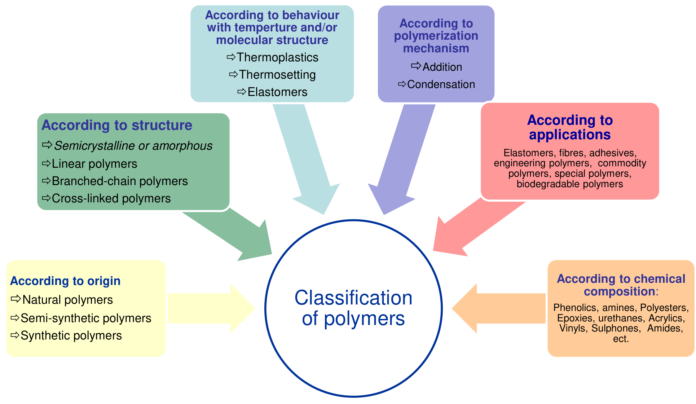
Part I of this page develops the structure (Sections 6 to 12) and the polymerization mechanism (Section 4); Part II develops the behaviour with temperature and the applications.
§ 3 What decides the properties of a polymer [Session 19 Slide 7]
The final properties of a polymer depend on its molecular features [Session 19 Slide 7]:
| Molecular feature | What it means | Section |
|---|---|---|
| Monomeric nature | the family of polymers | 20, Part II |
| Number of monomeric units | the molecular weight | 5 |
| Proportion of chains of different molecular weight | the distribution | 5 |
| Monomeric functionality | branching and cross-linking | 9 |
| Relative position of groups | tacticity and conformational changes | 6, 7 |
| Sorting of units | the sequence (copolymers) | 8 |
| Orderly positioning of chain sections | the crystallinity | 10, 11 |
The common thread is that a polymer is not a set of atoms in a lattice, as a metal is, but a set of long, flexible molecules: how long they are, how regular they are and how freely they can move past each other decide everything else.
§ 4 Polymerization mechanisms [Session 19 Slides 8-11]
Polymerization is any process in which relatively small molecules, the monomers, combine chemically to produce a very large chainlike or network molecule, the polymer. The example of the slide is ethylene, whose double bond opens so that the units link into polyethylene [Session 19 Slide 8]:
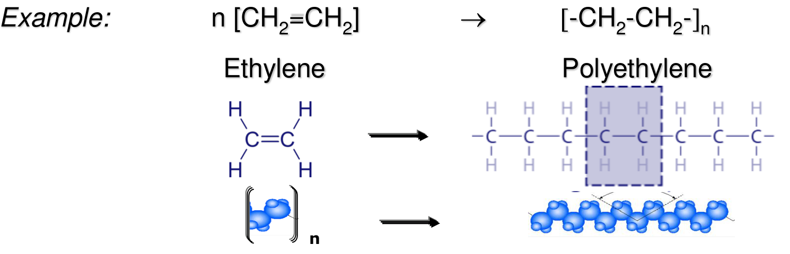
There are two types of polymerization [Session 19 Slide 8]:
- Chain-reaction (or addition) polymerization: the polymer chains are built up by chemically combining monomers, one after another, into long chain molecules.
- Step-reaction (or condensation) polymerization: the monomers react chemically with each other to produce polymers, often releasing a small molecule (water, methanol, etc.) as a by-product.
Slide 9 shows the difference with a grid of monomers at 25 %, 50 % and 100 % conversion. In the chain reaction one chain grows long while the other monomers are still free: long chains exist from the start. In the step reaction every monomer reacts with its neighbour first, forming dimers and short pieces, and the long chains appear only at the end, when the pieces join [Session 19 Slide 9].
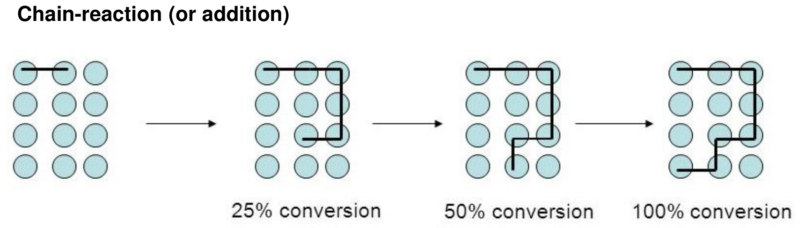
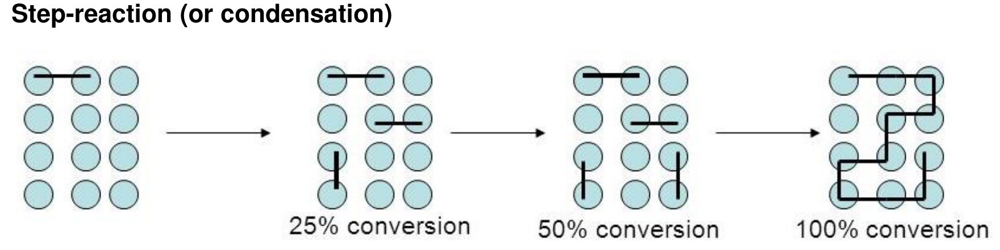
4.1 Chain reaction (addition) [Session 19 Slide 10]
The ethylene monomer has a C=C double bond; in polyethylene each repeat unit $\mathrm{-CH_2{-}CH_2-}$ is joined to its neighbours by single bonds. The chain reaction has three stages [Session 19 Slide 10]:
- Initiation: an initiator (benzoyl peroxide) produces a free radical, and a polyethylene repeat unit attaches to one of the initiator radicals.
- Propagation: additional repeat units attach and propagate the chain.
- Termination: a hydrogen atom is rearranged in the active ends of the chains and a double covalent bond is created, which stops the growth.
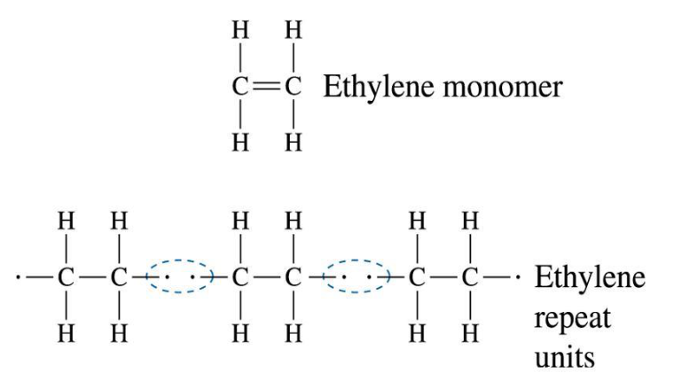
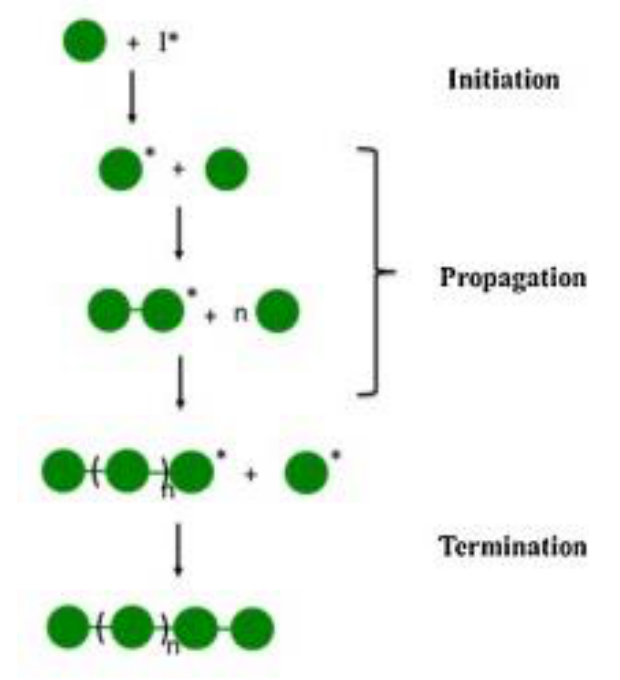
4.2 Step reaction (condensation) [Session 19 Slide 11]
The example is the condensation of polyethylene terephthalate (PET), a common polyester. The $\mathrm{OCH_3}$ group of dimethyl terephthalate and a hydrogen atom of ethylene glycol are removed, which lets the two monomers join and produces methyl alcohol as a by-product. The growth goes by consumption of the monomers through the formation of dimers, trimers and so on, then oligomers, and only at the end high-molecular-weight chains [Session 19 Slide 11].
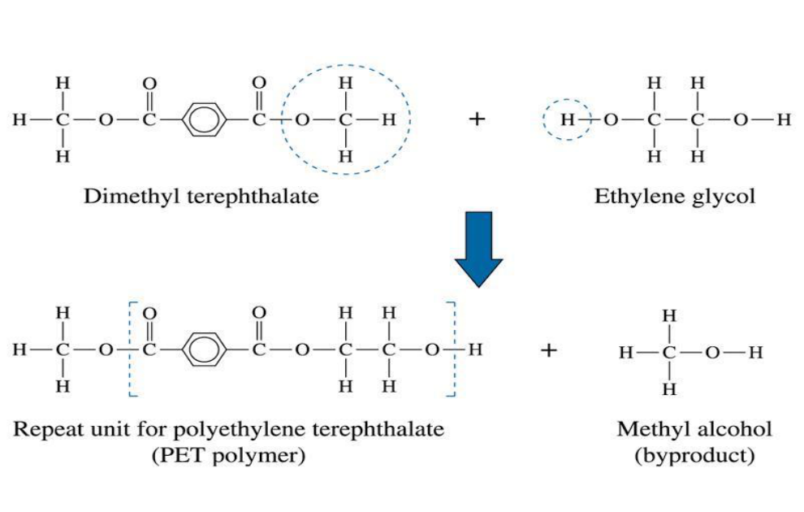
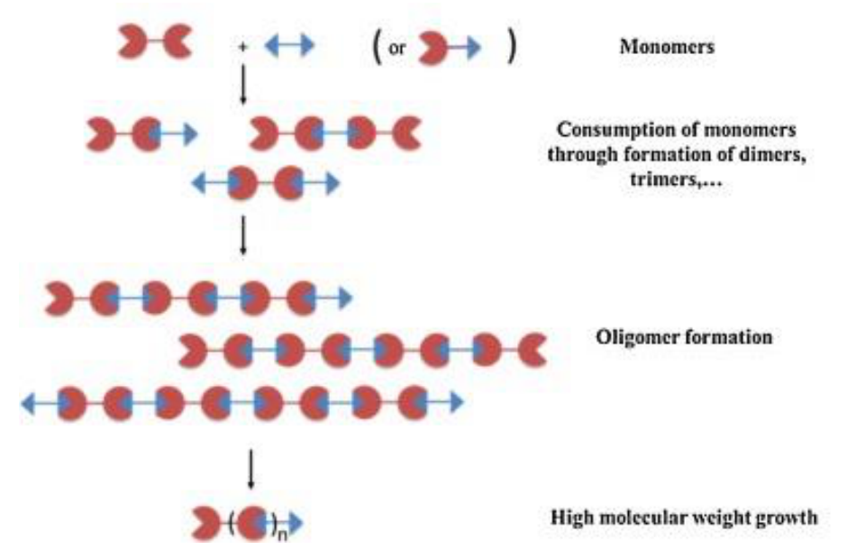
§ 5 Molecular weight [Session 19 Slides 12-15]
5.1 Distribution and degree of polymerization [Session 19 Slide 12]
Because of the polymerization process, the polymer molecules do not all have exactly the same molecular weight: there is a range or distribution of molecular weights. The molecular weight of a molecule is the sum of the atomic weights of the atoms that make it up [Session 19 Slide 12]. The degree of polymerization $X_n$ (or DP) is the average number of monomer units in the polymer chain:
where $M_n$ is the number-average molecular weight and $M_0$ the molecular weight of the monomer (the repeat unit). In the distribution curve of the slide the number average lies to the left of the weight average.

5.2 Number average, weight average and polydispersity [Session 19 Slide 13]
The chains are grouped in size ranges $i$, with mean molecular weight $M_i$, number of molecules $N_i$ and weight $W_i$. The number fraction is $x_i = N_i/\sum N_i$ and the weight fraction is $w_i = W_i/\sum W_i$. The two averages are [Session 19 Slide 13]:
and their ratio is the index of polydispersion, which measures the lack of homogeneity of the molecular weights:
The weight average counts each chain by its weight, so the long chains weigh more in it: $M_w \ge M_n$ and $I \ge 1$, with $I = 1$ only when all the chains have the same length (this inequality is an extension; it follows from $\sum N_i M_i^2 \sum N_i \ge (\sum N_i M_i)^2$).
The first box of Slide 13 also writes $M_n$ in terms of the weights as $\sum W_i M_i / \sum (W_i/M_i)$. The numerator should be $\sum W_i$: since $N_i = W_i/M_i$, $M_n = \sum N_i M_i/\sum N_i = \sum W_i/\sum (W_i/M_i)$, and only this form has the unit of a molecular weight. The same box writes $M_n = M_0 x_n$, where $x_n$ is the degree of polymerization $X_n$ of Slide 12, not a number fraction $x_i$.
5.3 Worked example of the slides [Session 19 Slides 14-15]
The number average is obtained by dividing the chains into size ranges and determining the number fraction of chains within each range [Session 19 Slide 14]. Slides 14 and 15 give the same polymer as a number distribution and as a weight distribution:
| Range (g/mol) | Mean $M_i$ (g/mol) | $x_i$ | $w_i$ |
|---|---|---|---|
| 5 000 – 10 000 | 7 500 | 0.05 | 0.02 |
| 10 000 – 15 000 | 12 500 | 0.16 | 0.10 |
| 15 000 – 20 000 | 17 500 | 0.22 | 0.18 |
| 20 000 – 25 000 | 22 500 | 0.27 | 0.29 |
| 25 000 – 30 000 | 27 500 | 0.20 | 0.26 |
| 30 000 – 35 000 | 32 500 | 0.08 | 0.13 |
| 35 000 – 40 000 | 37 500 | 0.02 | 0.02 |
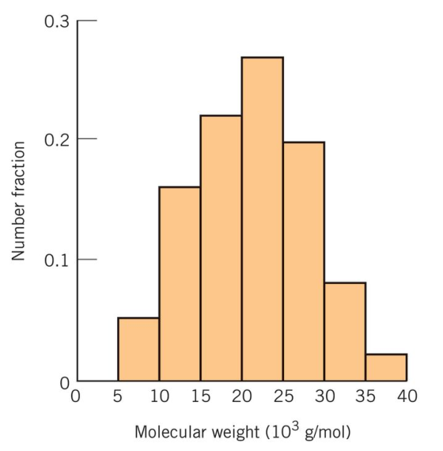
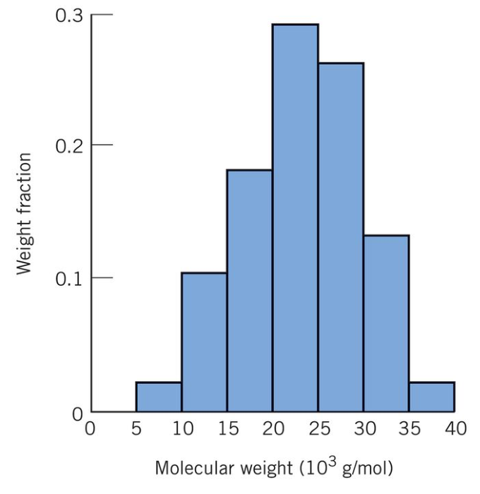
The answer boxes of the slides are empty; the results below are an extension, computed with the formulas of Slide 13. Each fraction column adds up to 1.00. Number average:
Weight average:
The weight histogram is shifted to the right of the number histogram, as the curve of Slide 12 shows: the few long chains carry a large share of the mass.
§ 6 Conformation [Session 19 Slides 16-17]
Polymer chains are not strictly straight. The conformation is the stereostructure of the molecule, defined by its sequence of bonds and its torsion angles. A chain changes its conformation by rotation of segments about the C-C single bonds; the bond angle $\theta$ between successive bonds stays fixed, while the torsion angle $\varphi$ changes. The number of conformation states is limited by the type of pendant groups on the monomers: bulky groups get in the way of the rotation [Session 19 Slide 16]. Because each bond can rotate, a long chain does not stay as a straight zig-zag but folds into a random coil.
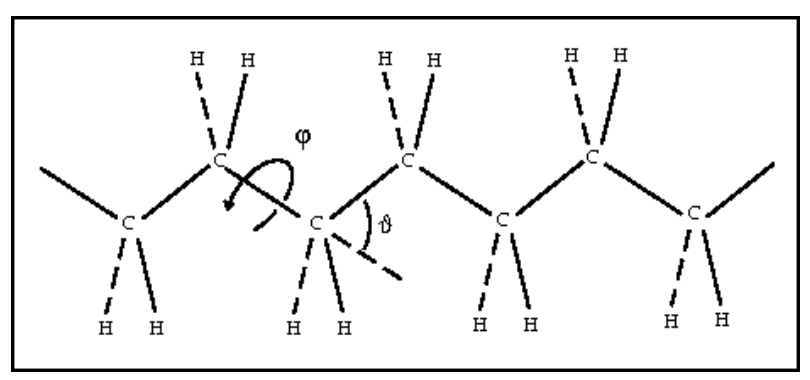
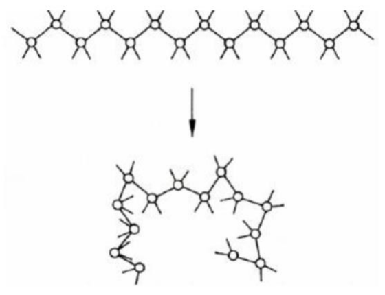
cis/trans isomerism. When a repeat unit has a double bond between chain carbon atoms, the bond cannot rotate, and the groups attached to it are fixed on one side or the other [Session 19 Slide 17]:
- cis-isoprene (natural rubber): the H atom and the $\mathrm{CH_3}$ group are on the same side of the chain.
- trans-isoprene (gutta percha): the H atom and the $\mathrm{CH_3}$ group are on opposite sides of the chain.
The two have the same composition but different properties: natural rubber is an elastomer and gutta percha is not (Section 25).
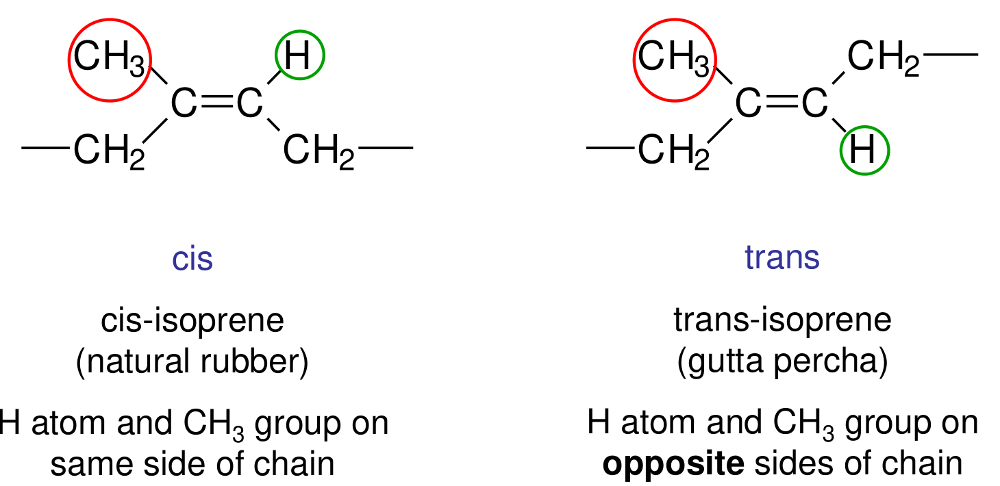
§ 7 Tacticity [Session 19 Slides 18-19]
In a vinyl monomer $\mathrm{H_2C{=}CH{-}R}$ the side group R can end up on either side of the chain each time a unit is added. When the R groups follow a pattern along the chain, the polymer shows tacticity [Session 19 Slide 18]:
- Isotactic: all the R groups on the same side of the chain.
- Syndiotactic: the R groups alternate from one side to the other.
- Atactic: the R groups are placed at random, with no pattern.
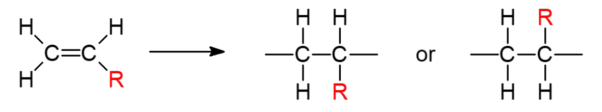
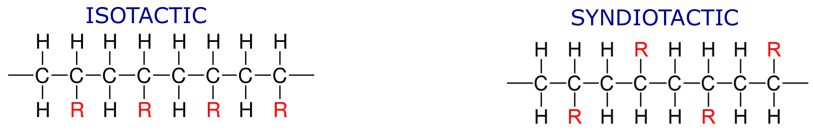
The examples of Slide 19 are polypropylene (R = $\mathrm{CH_3}$) and polystyrene (R = phenyl ring). The regular forms can pack in order and crystallize, the random form cannot: atactic polypropylene is a wax-type material, with very bad mechanical properties [Session 19 Slide 19].
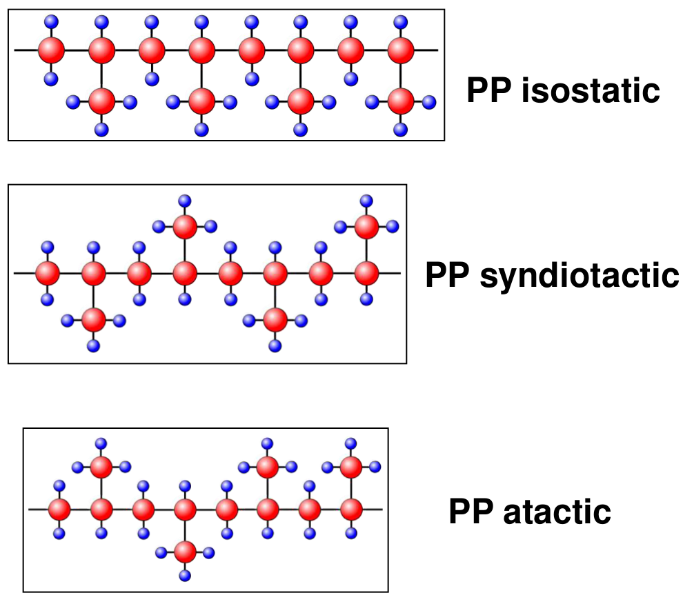
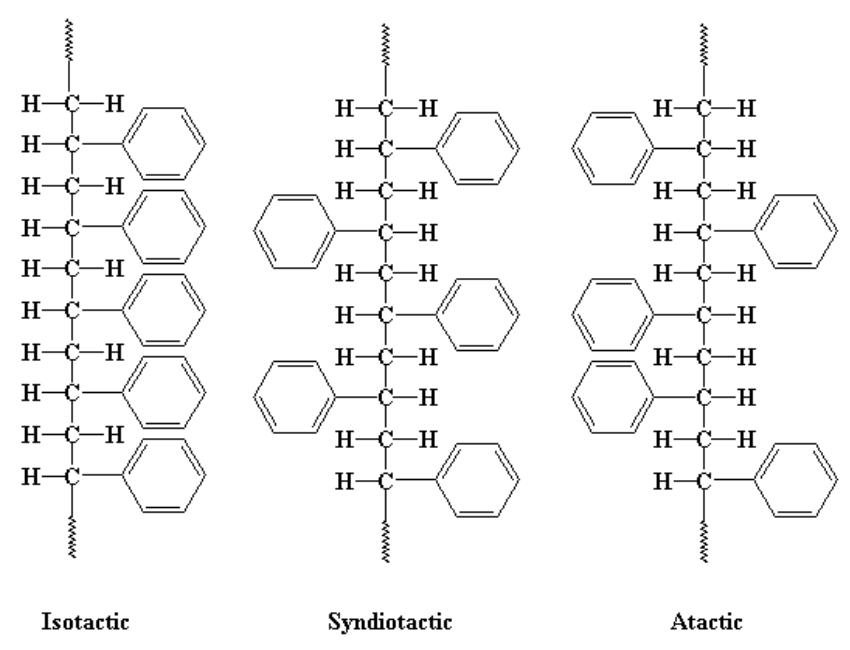
§ 8 Sequences: homopolymers and copolymers [Session 19 Slide 20]
A homopolymer contains only one type of monomer. A copolymer has two monomers polymerized together, and the order of the two units along the chain gives four types [Session 19 Slide 20]:
| Copolymer | Sequence |
|---|---|
| Random | the two units placed at random |
| Alternating | the two units alternate one by one |
| Block | long blocks of each unit |
| Graft | chains of one unit grafted as branches onto a main chain of the other |
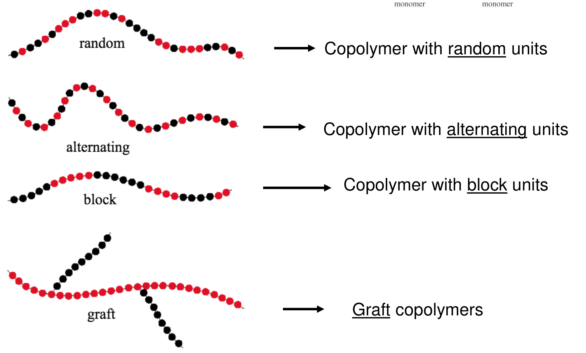
The example of the slide is the copolymer of vinyl chloride and vinyl acetate (polyvinyl chloride-polyvinyl acetate):
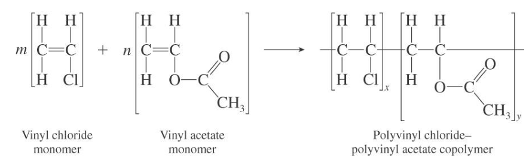
§ 9 Molecular structure [Session 19 Slides 21-22]
Slide 21 repeats the classification diagram with the "structure" branch framed. Slide 22 shows the four molecular structures and, more importantly, which bonds hold the chains together [Session 19 Slide 22]:
| Structure | Bonds between chains |
|---|---|
| Linear polymers | secondary bonds |
| Branched polymers | secondary bonds |
| Crosslinked polymers | covalent bonds |
| Network polymers | covalent bonds in 3D |
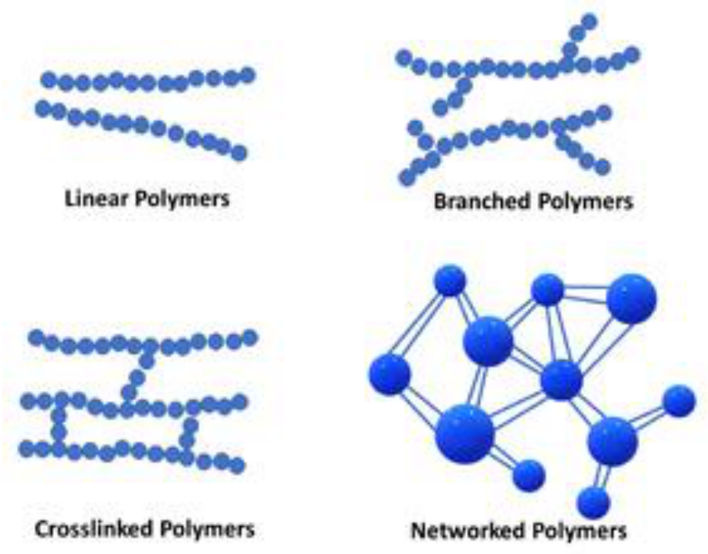
This is the key to the behaviour with temperature of Part II: secondary bonds (van der Waals forces, see the note on secondary bonds) break with heat and form again on cooling, so linear and branched polymers can melt and be reshaped, while covalent bonds between chains do not break without destroying the material.
§ 10 Crystallinity [Session 19 Slides 23-25]
10.1 Semicrystalline and amorphous polymers [Session 19 Slides 23-24]
The crystallinity of a polymer is the degree to which there are regions where the polymer chains are aligned with one another [Session 19 Slide 23]. Two classes follow:
- Semicrystalline polymers: they show a glass transition and a fusion, with a glass transition temperature $T_g$ and a melting temperature $T_m$.
- Amorphous polymers: they show only the glass transition, $T_g$.
A semicrystalline polymer is crystalline regions (ordered) plus amorphous regions (disordered) [Session 19 Slide 24]. The important points of Slide 24 are:
- The properties are a function of the degree of crystallinity.
- More crystallinity means more packing of the chains.
- More crystallization means more anisotropy (Slide 23: isotropy and anisotropy).
- The density of the crystalline polymer is higher than that of the amorphous polymer, $\rho_{crystalline} > \rho_{amorphous}$.
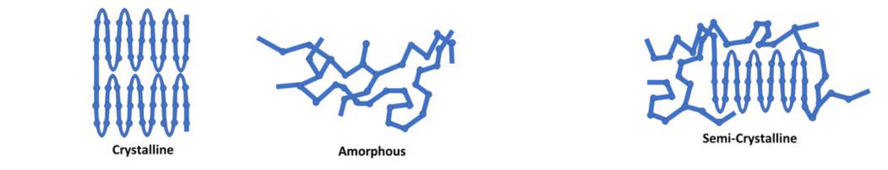
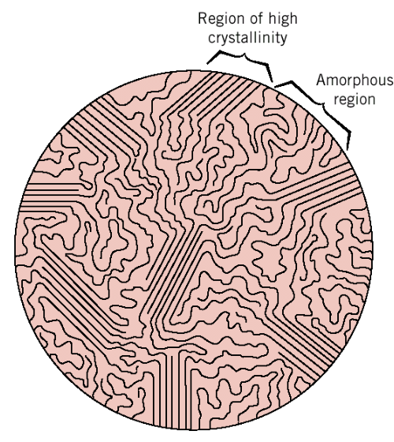
10.2 Spherulites and lamellae [Session 19 Slide 25]
Most polymers that crystallize from the melt form spherulites, which grow at $T < T_m$: nuclei appear, grow radially with time and finally fill the sample, meeting at the interspherulitic boundaries [Session 19 Slide 25]. Under polarized light a polyethylene sample shows them as many-armed crosses.

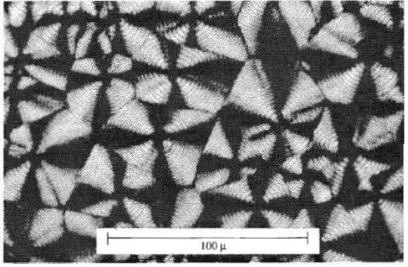
The ordered regions are called lamellae: thin plates of chain-folded crystals, where one chain runs back and forth across the thickness of the plate. Inside a spherulite the lamellar chain-folded crystallites grow outwards from a nucleation site, with amorphous material between them, and tie molecules run from one lamella to the next through the amorphous region [Session 19 Slide 25].

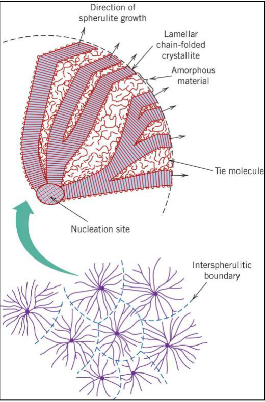
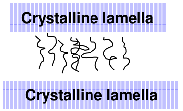
The thickness label of the chain-folded lamella is partly hidden by the next figure on Slide 25; the visible part reads "≈ 100 c... atom...", that is, a thickness of the order of a hundred (carbon) atoms. This reading of the hidden word is the author's.
The tie molecules and the amorphous layers between lamellae are what deform first under load (Section 14).
10.3 Degree of crystallinity from the density [Session 19 Slide 25]
Because crystalline regions are denser than amorphous ones, the density of a sample tells how crystalline it is [Session 19 Slide 25]:
with $\rho_s$ the actual density of the polymer, $\rho_c$ the density of the totally crystalline polymer and $\rho_a$ the density of the totally amorphous polymer.
Where the formula comes from (extension). Take 1 g of sample with a mass fraction $X_c$ of crystalline polymer. The volumes of the two parts add up:
Multiplying by $\rho_s\rho_c\rho_a$ gives $\rho_c\rho_a = X_c\rho_s\rho_a + (1 - X_c)\rho_s\rho_c$, so $\rho_c\rho_a - \rho_s\rho_c = X_c\rho_s(\rho_a - \rho_c)$ and
which is the formula of the slide: the degree of crystallinity is a mass fraction. The limits check it: $\rho_s = \rho_a$ gives 0 % and $\rho_s = \rho_c$ gives 100 %. The ratio is dimensionless because both numerator and denominator are a product of two densities.
§ 11 Factors affecting crystallinity [Session 19 Slides 26-27]
Crystallization needs the chains to line up, so anything that makes the chains regular and gives them time to order raises the crystallinity, and anything irregular lowers it [Session 19 Slides 26-27]:
- Cooling rate: a faster cooling gives smaller crystals. The number and size of the crystals depend on the undercooling $\Delta T = T_m - T_c$; a larger $\Delta T$ gives more and smaller crystals, because it favours nucleation.
- Complex monomeric structures lower the degree of crystallinity, while symmetric and simple monomers give a greater chance of a crystalline polymer (polyethylene: simple, yes; polystyrene: complex, no).
- Linear polymers pack better and are more crystalline; branched polymers are less crystalline.
- Polymers with asymmetric carbons: atactic ones are amorphous; syndiotactic and isotactic ones are probably crystalline.
- Polarity: polar groups usually increase crystallinity, because they increase the ordering. Linear condensation polymers are crystalline because they have polar groups that form hydrogen bonds: polyamides and polyesters.
- Copolymer sequence: random and graft copolymers are amorphous; alternating and block copolymers have some crystallinity.
- Configuration: cis is more crystalline than trans, as printed on Slide 27.
The molecular structure table of Slide 27:
| Structure | Crystal |
|---|---|
| Linear | most probable |
| Branched | sometimes |
| Cross-linked | almost never |
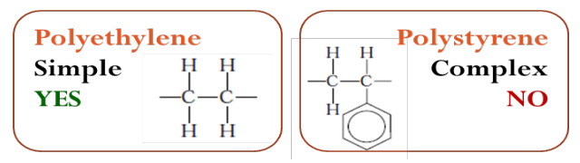
Finally, more crystallinity means a higher $T_m$ [Session 19 Slide 27].
§ 12 Thermal transitions: $T_m$ and $T_g$ [Session 19 Slides 28-30]
12.1 Effect of temperature [Session 19 Slide 28]
The two transitions belong to the two kinds of region [Session 19 Slide 28]:
- $T_m$, the melting temperature, belongs to the crystalline regions.
- $T_g$, the glass transition temperature, belongs to the amorphous regions.
Above $T_g$ the segments of the amorphous regions can move; above $T_m$ the segments of both the amorphous and the crystalline regions move, and the polymer is a liquid. Below $T_g$ the amorphous regions are a rigid glass.
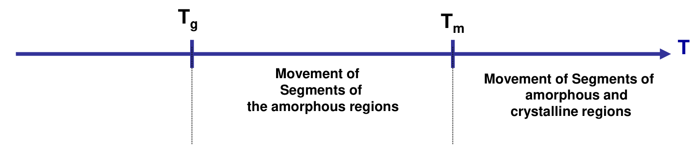
The slide shows this with the specific volume (and its inverse, the density) against the temperature. A crystalline solid (curve C) jumps in volume at $T_m$, where it melts. An amorphous polymer (curve A) has no jump: its slope changes at $T_g$, from the glass to the undercooled liquid, which becomes the liquid above $T_m$. A semicrystalline solid (curve B) shows both, the change of slope at $T_g$ and the jump at $T_m$. In density the order is crystalline above semicrystalline above glass at every temperature below $T_m$.

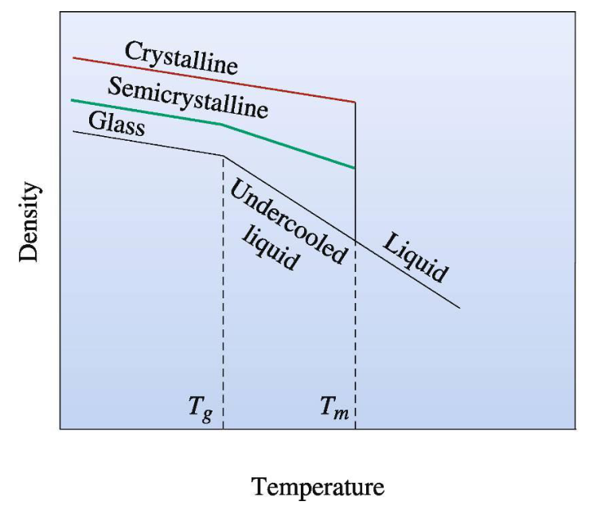
12.2 Factors affecting $T_g$ [Session 19 Slide 29]
$T_g$ is the temperature at which the chain segments become free to move, so everything that hinders that motion raises it [Session 19 Slide 29]:
- Molecular weight: higher $M$, lower chain mobility, higher $T_g$.
- Intermolecular interactions: stronger interactions, higher conformational energy, higher $T_g$.
- Chain flexibility: higher mobility, lower conformational energy and higher $\Delta S$, lower $T_g$.
- Symmetry: higher symmetry, lower dipolar moment, lower $T_g$.
The slide illustrates the effect of the side group X in the vinyl polymers $[\mathrm{-CH_2{-}CHX-}]_n$:
| X | Polymer | $T_g$ (°C) |
|---|---|---|
| -H | HDPE | -110 |
| -CH₃ | PP | -20 |
| -Cl | PVC | 87 |
| -C≡N | PAN | 150 |
| -C₆H₅ | PS | 100 |
and a second panel adds polyvinylcarbazole (PVK, $T_g = 210$ °C, a very bulky side group). The larger or more polar the side group, the harder the rotation of the backbone and the higher $T_g$: polar Cl and CN raise it more than their size alone would suggest.
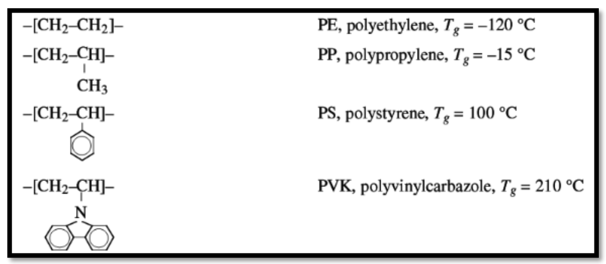
The table of Slide 29 gives $T_g = -110$ °C for HDPE and $-20$ °C for PP, while the panel of structures on the same slide gives $-120$ °C for PE and $-15$ °C for PP. Both are kept as printed; they come from different sources and the difference does not change the trend.
12.3 Influence of the molecular weight [Session 19 Slide 30]
Slide 30 plots the temperature against the molecular weight on a log scale from $10^1$ to $10^7$ g/mol. Both $T_g$ and $T_m$ rise with the molecular weight and level off for long chains. The diagram has five regions: below $T_g$ a partially crystalline plastic (and a crystalline solid at low $M$); between $T_g$ and $T_m$ a tough plastic; above $T_m$ a rubber at high $M$, a viscous liquid at intermediate $M$ and a mobile liquid at low $M$ [Session 19 Slide 30]. Short chains behave as small molecules (a wax or a liquid); only long chains entangle and give a solid that is useful as a plastic.

§ 13 Stress-strain behaviour of polymers [Session 19 Slides 31-33]
Slide 31 repeats the agenda and opens the mechanical part: stress-strain behaviour, amorphous (glassy) polymers, semicrystalline polymers, thermosets (cross-linked polymers used below their $T_g$), elastomers, strength, viscoelasticity and the relaxation modulus.
Polymers show four types of stress-strain curve [Session 19 Slide 32]:
| Type | Behaviour |
|---|---|
| A) Brittle | linear up to fracture at a small strain (brittle plastic) |
| B) Tough and ductile | yield and then plastic flow (tough and strong plastic) |
| C) Tough and ductile with strain hardening | yield, a plateau, and a rise before fracture (hard and tough plastic) |
| D) Elastomeric | low stiffness and very large, mostly elastic strains |
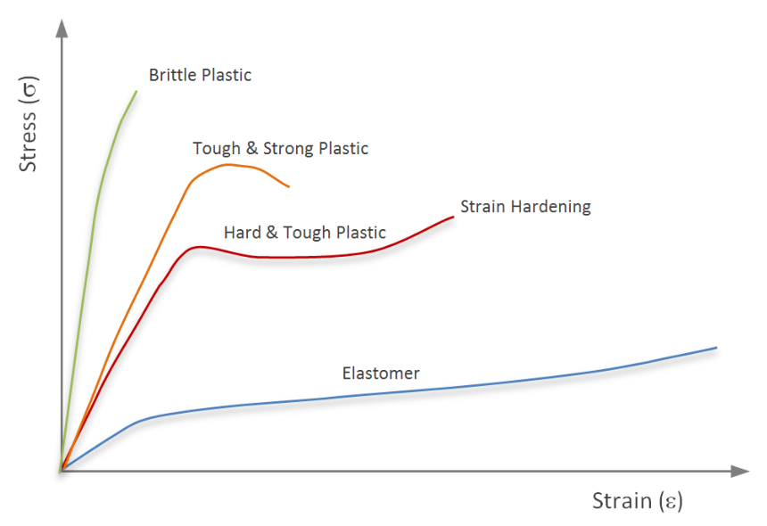
Compared with metals [Session 19 Slide 32]:
| Property | Metals | Polymers |
|---|---|---|
| Tensile strength $\sigma_m$ | < 4100 MPa | 10 – 100 MPa |
| Elastic modulus $E$ | 48 – 410 GPa | 0.007 – 4 GPa |
| Maximum deformation $\%\varepsilon_m$ | < 100 % | can reach more than 1000 % |
The mechanical properties of polymers are a function of the temperature, the strain rate and the environment: $\text{properties} = f(T, v_{def}, \text{environment})$. This is the big difference with metals, whose curves change little near room temperature.
The quantities are read from the curve as for metals [Session 19 Slide 33] (see the note on the tension test):
- Young's modulus (modulus of elasticity): determined in the same way as for metals.
- Yield strength $\sigma_y$: the stress at the end of the elastic region, taken at the maximum of the curve.
- Tensile strength (TS): the stress at which fracture occurs.
Note the difference with metals: for a polymer the tensile strength is the stress at fracture, which can be higher or lower than $\sigma_y$. The curve of 6,6-nylon, a typical thermoplastic, shows the whole sequence: linear elastic deformation, non-linear elastic deformation, yield strength at about 9000 psi, necking, plastic deformation at a nearly constant stress, and a final rise to the tensile strength at about 300 % strain.
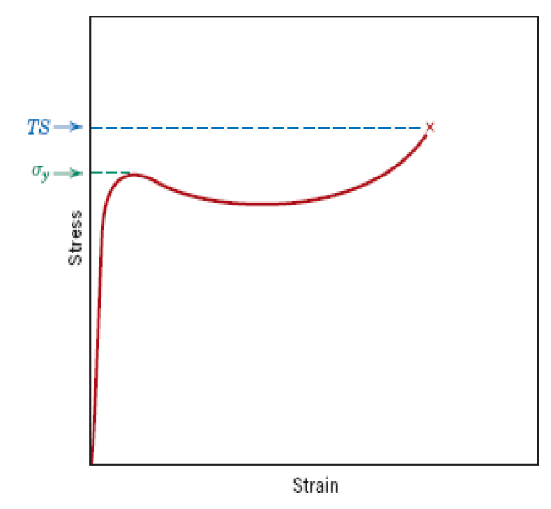
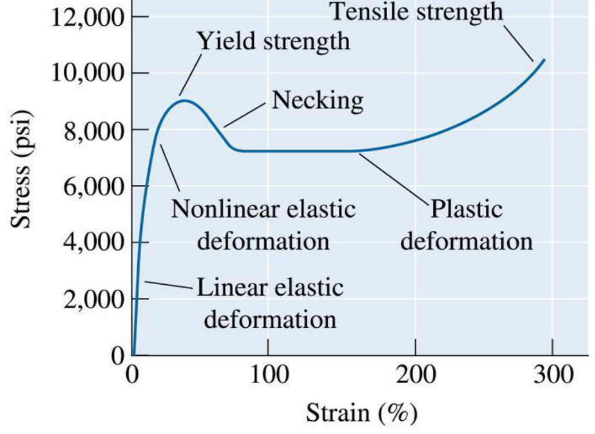
§ 14 Mechanisms of plastic deformation [Session 19 Slides 34-41]
A ductile semicrystalline polymer in tension goes through a sequence that has no equivalent in metals [Session 19 Slide 34]: segments of the chains align and a neck appears; the zone where the chains are aligned becomes stronger; therefore the neck extends along the specimen instead of becoming sharper; the neck propagates over the whole length with the chains ordered, and only then does the sample fail.
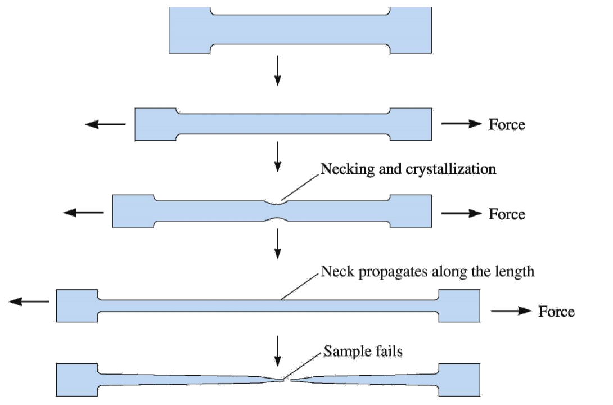
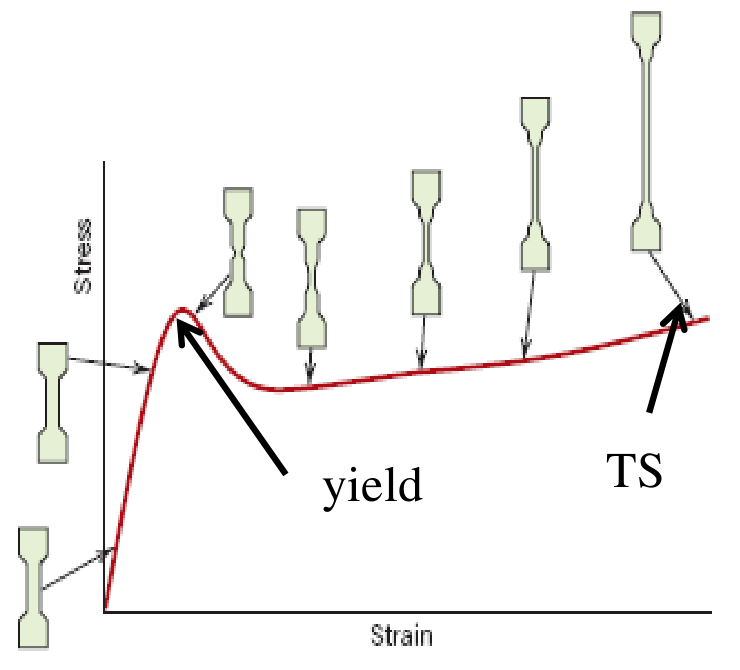
Slides 35 to 40 follow the same curve stage by stage, with the chain structure at each stage:
Elastic region [Session 19 Slide 35]. The stress is proportional to the strain and the deformation is completely reversible: Hooke's law is obeyed, and the slope of the straight part gives the elastic modulus. In practice the elastic region is unlikely to be perfectly straight, so the modulus is taken as the tangent to the first part of the curve. At chain level the amorphous tie chains between the lamellae are stretched.
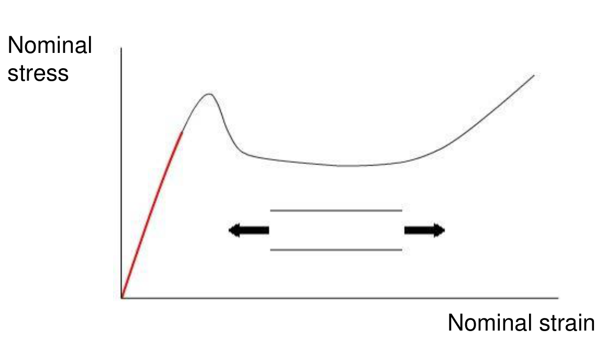
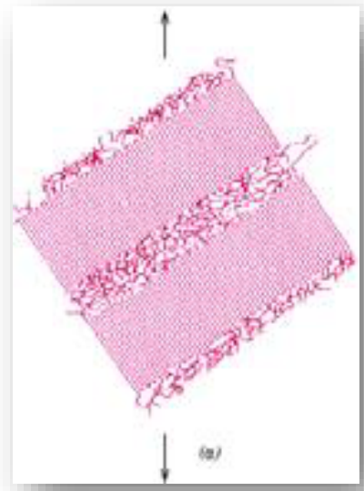
Yield [Session 19 Slide 36]. The yield stress of a polymer is poorly defined, because the curve bends over at the top of the elastic region. The value at the end of the elastic region or at the top of the curve could be used; the value at the top of the curve is the one generally used. A typical ductile polymer yields at 5 to 10 % strain, whereas a metal generally yields at less than 0.1 % strain.
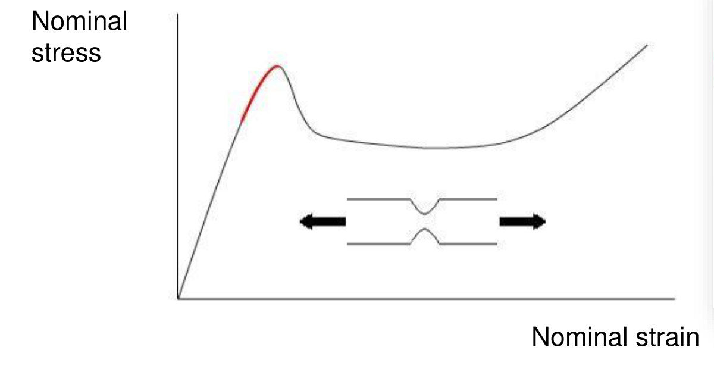
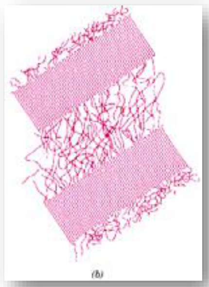
Necking [Session 19 Slide 37]. At the yield point the cross-section decreases locally at one point along the sample. Necking involves a balance between work hardening and softening: the nominal stress falls after yield, before settling at a constant value as the neck extends along the sample.
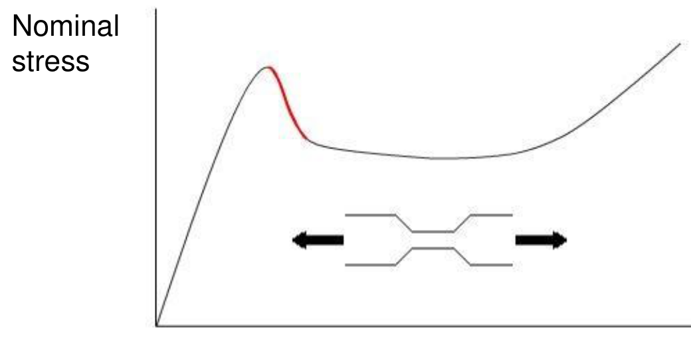
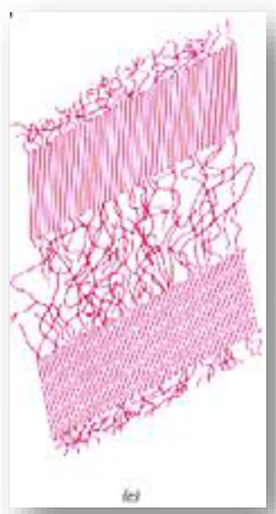
Cold drawing [Session 19 Slide 38]. The process by which the neck extends is known as strain hardening or cold drawing: the polymer chains unravel and align parallel to the direction of the applied stress. This is the long plateau of the curve.
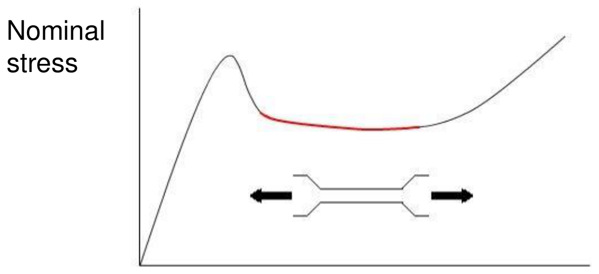
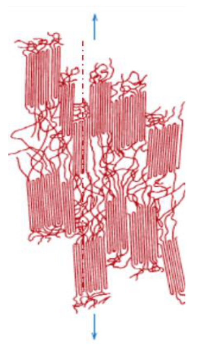
Strain hardening [Session 19 Slide 39]. Once the whole sample is necked, the stress rises again until fracture. Strain hardening is principally a consequence of chain orientation: in the cold-drawn regions of both amorphous and crystalline polymers the molecules are aligned parallel to the stretching direction, and this alignment strengthens the necked region and reduces its rate of deformation. An oriented polymer is significantly stronger and stiffer than an isotropic one.
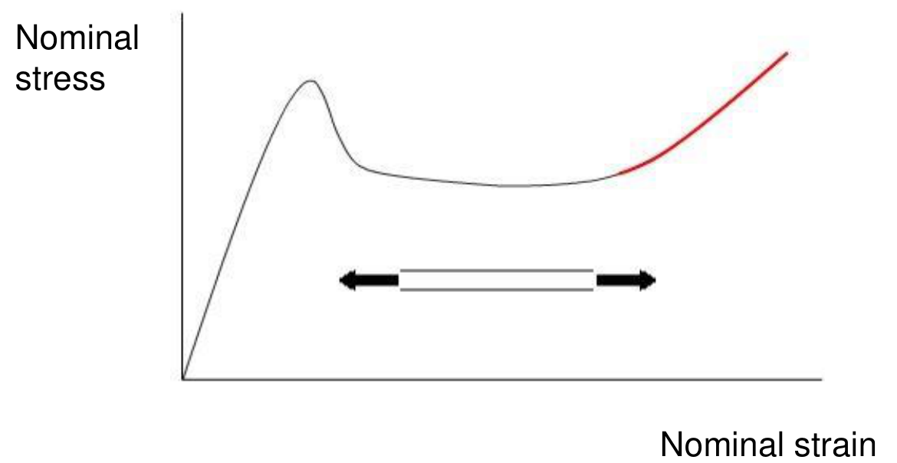
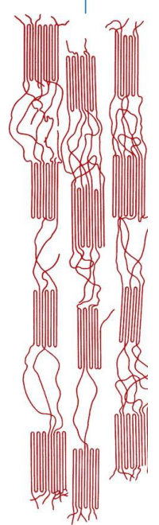
Failure [Session 19 Slide 40]. When no further chain alignment is possible, the sample fractures.
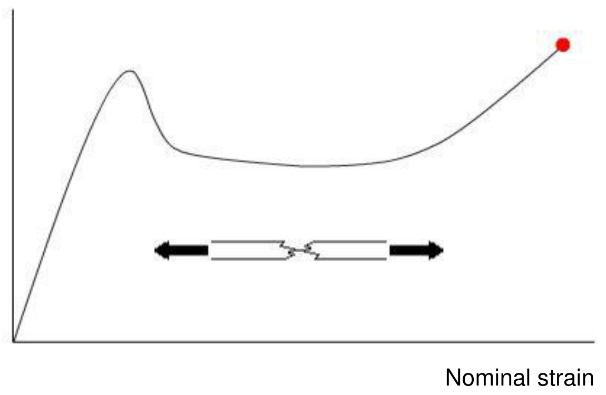
Slide 41 sums up the chain-level sequence in a semicrystalline polymer [Session 19 Slide 41]:
- Elastic deformation.
- Elongation of the amorphous tie chains.
- Tilting of the lamellar chain folds.
- Separation of crystalline block segments and alignment with the tensile axis.
- Orientation of both block segments and tie chains with the tensile axis.
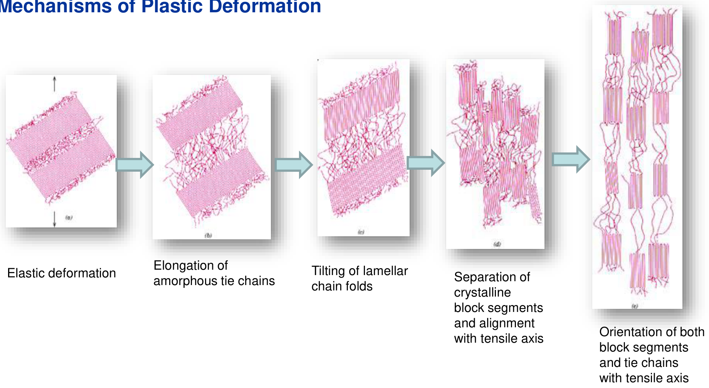
§ 15 Effect of temperature and strain rate [Session 19 Slide 42]
The major factors affecting the strength are the temperature and the strain rate [Session 19 Slide 42]:
| Change | Effect |
|---|---|
| Strain rate increases | more brittleness, lower percent deformation at fracture, more difficult disentanglement |
| Temperature increases | lower modulus of elasticity, lower tensile strength, higher percent deformation to fracture |
If the strain rate is high, the behaviour is brittle, because the chains have no time to unravel. The PVC curves show it: at 1 mm/s the sample breaks soon after the peak, at 0.05 mm/s it draws for a long strain. The PMMA curves from $-40$ °C to 140 °C show the effect of the temperature: stiff and brittle below the glass transition, which the slide places at 86 to 104 °C, and soft and very ductile above it.
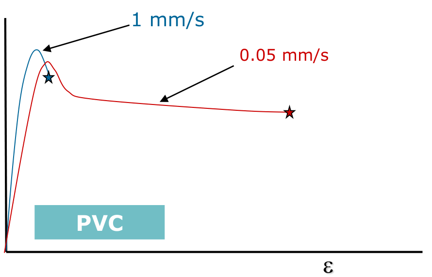
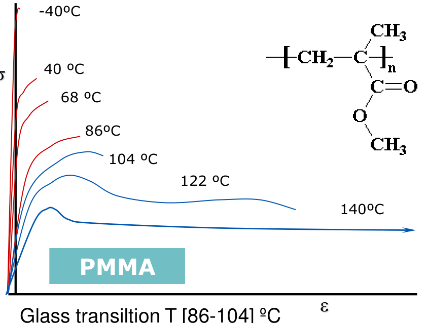
§ 16 Other factors that influence the strength [Session 19 Slide 43]
[Session 19 Slide 43]:
- Molecular weight: the tensile strength increases with the molecular weight, because long chains have a high number of entanglements: higher $M$, higher $\sigma$ and $E$.
- Degree of crystallinity: the strength also increases with it, since the crystalline polymer is denser (better packed) than the amorphous one: higher % crystallinity, higher $\sigma$ and $E$. The plot of the slide shows the yield point rising from about 40 MPa at 10 wt % to about 70 MPa at 42 wt % crystallization.
- Crosslinking: increasing the degree of crosslinking (thermosetting polymers) increases the strength; it inhibits chain motion and makes the polymer more brittle.
- Deformation: deforming a polymer can increase its strength, because the chains become oriented and interact more effectively (Section 14).
- Lateral groups: voluminous groups increase the stiffness and $\sigma$ and reduce the ductility; polar groups increase the intermolecular forces and $\sigma$. The slide gives PVC (polar Cl) 40 – 80 MPa against PE 17 – 36 MPa.

§ 17 Elastomers [Session 19 Slide 44]
In an elastomer virtually all the deformation is elastic, so the modulus of elasticity changes as the strain changes: the curve is not a straight line [Session 19 Slide 44]. At first the coiled chains between crosslinks uncoil, which needs little force (a low slope); at large strains the chains are straight and the bonds themselves stretch, so the curve becomes steep. When the force is removed the crosslinks pull the network back to its original shape.
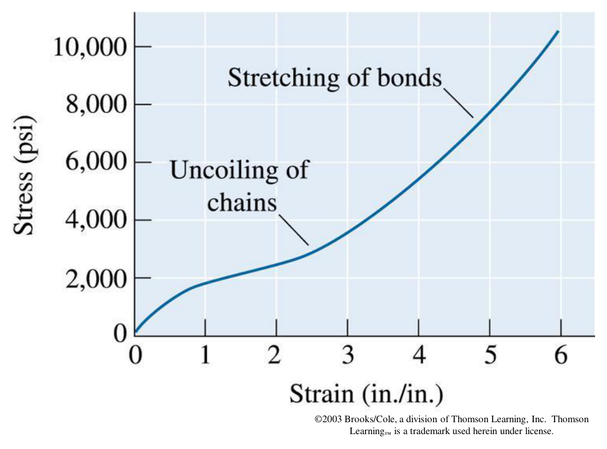
§ 18 Modulus against temperature [Session 19 Slides 45-46]
The modulus of a polymer can change by several orders of magnitude with the temperature, so it is plotted on a log scale [Session 19 Slides 45-46]:
- Crystallinity: a 100 % amorphous polymer loses most of its stiffness at $T_g$; a 100 % crystalline one keeps it up to $T_m$; a 50 % / 50 % polymer lies in between, with a smaller drop at $T_g$ and a final drop at $T_m$.
- Molecular weight: higher molecular weight (higher entanglement density) keeps the modulus higher above $T_g$ and extends the plateau to higher temperatures.
- Crosslinking: increasing crosslinking (thermosetting polymers) increases the stiffness; with heavy crosslinking the modulus hardly falls at all.
- Elastomer: a pronounced rubbery region, a long plateau of low modulus between $T_g$ and $T_m$, and the elastomer is used there, with $T_g$ below room temperature.


§ 19 Viscoelasticity: creep and relaxation [Session 19 Slides 47-49]
A polymer is viscoelastic: its response is partly that of an elastic solid (instantaneous and recovered) and partly that of a viscous liquid (growing with time and not recovered), so time enters the mechanical properties.
Creep [Session 19 Slide 47] is a slow, progressive deformation under constant stress. Let the stress be a step that begins at time zero:
with $H(t)$ the Heaviside unit step function (zero for $t < 0$, one for $t > 0$ and for $t = 0$, as printed). The strain $\varepsilon(t)$ of a viscoelastic material increases with time, and the ratio
is the creep compliance. In the figure an elastic material jumps to a constant strain and recovers it fully; a viscous one strains linearly in time and keeps the strain; a viscoelastic one does both, with a gradual part.
Stress relaxation [Session 19 Slide 48] is the gradual decrease of the stress when the material is held at constant strain. With a strain step
the ratio
is the relaxation modulus. It depends on the temperature, and the rate at which the stress is applied also influences the viscoelastic behaviour: an increase of the rate has the same effect as a decrease of the temperature (the same equivalence as in Section 15).
The units are consistent: $J$ is a strain over a stress, in Pa⁻¹, and $E(t)$ a stress over a strain, in Pa (unit check: extension).
Relaxation modulus against temperature [Session 19 Slide 49]. The relaxation modulus is measured at a fixed time after the strain is applied, $t_1 = 10$ s, and is written $E_r(10)$. On a log-log plot of $E_r(t)$ against time the curves at higher temperatures ($T_7 > T_6 > \dots > T_1$) lie lower and fall sooner. Plotted against the temperature, $E_r(10)$ of atactic polystyrene goes through five regions: glassy (about $10^3$ MPa), leathery around $T_g$ (the steep drop), rubbery, rubbery flow and viscous flow (liquid) near $T_m$. The third plot compares three polystyrenes: (A) crystalline isotactic, which stays stiff up to $T_m$; (B) lightly crosslinked atactic, which keeps a rubbery plateau; and (C) amorphous, which flows.


These are the same three behaviours as in Section 18, now measured as a relaxation: crystallinity and crosslinking keep the polymer from flowing above $T_g$.
§ 20 Examples of polymers [Session 19 Slide 50]
[Session 19 Slide 50]:
| Polymer | Repeat unit | Note on the slide |
|---|---|---|
| Polyethylene, PE | $\mathrm{-[CH_2{-}CH_2]_n-}$ | most popular plastic |
| Polypropylene, PP | $\mathrm{-[CH_2{-}CH(CH_3)]_n-}$ | used as plastic and as fibre |
| Poly(vinyl chloride), PVC | $\mathrm{-[CH_2{-}CHCl]_n-}$ | pipes, construction, cables |
| Polystyrene, PS | $\mathrm{-[CH_2{-}CH(C_6H_5)]_n-}$ | economic and resistant; Styrofoam is a PS foam |
| Poly(vinylidene fluoride), PVDF | $\mathrm{-[CH_2{-}CF_2]_n-}$ | high electric and fire resistance |
| Polymethyl methacrylate, PMMA | $\mathrm{-[CH_2{-}C(CH_3)(COOCH_3)]_n-}$ | transparent plastic, substitute of glass ("crystal") |
| Nylon (polyamides) | $\mathrm{-[CO{-}(CH_2)_4{-}CO{-}NH{-}(CH_2)_6{-}NH]_n-}$ | most common polymers used as fibres |
Part II — Polymeric Materials II: Classification and Processing (Session 20, Slides 1–38)
§ 21 Classification by applications [Session 20 Slides 1-3]
Slide 1 is the agenda: polymer classification (thermoplastics, thermosets, elastomers) and polymer processing. Slide 2 repeats the classification diagram of Section 2 with the "applications" branch highlighted. The classes by application are [Session 20 Slide 3]:
| Class | Definition on the slide |
|---|---|
| Commodity polymers (general use) | polymers of high consumption |
| Engineering polymers | good properties between 0 and 100 °C |
| Special polymers | high-price polymers with outstanding characteristics |
| Fibres | generally thermoplastic polymers whose chains are easily oriented in the direction of the viscous flow during processing |
| Elastomers | polymers (thermoplastics or lightly cross-linked thermosets) with an elastic deformation > 200 % |
| Adhesives | substances that combine a high adhesion and a high cohesion |
§ 22 Thermoplastics, thermosets and elastomers [Session 20 Slides 4-7]
Slide 4 highlights the "behaviour with temperature and/or molecular structure" branch. Slide 5 defines the three families [Session 20 Slide 5]:
- Thermoplastics flow when heated and harden again when cooled. They are linear or branched polymers whose chains are not interconnected (few or no crosslinks).
- Thermosetting polymers chemically decompose (break down) when heated, instead of flowing. They are heavily cross-linked into a strong three-dimensional network.
- Elastomers have a very low modulus of elasticity and a high extensibility; they are thermoplastics or lightly cross-linked thermosets with an elastic deformation > 200 %.
The difference is the bond that holds the chains together, as in Section 9. In a thermoplastic the chains are held by van der Waals forces; in a thermoset by a dense network of crosslinks; in an elastomer by a few crosslinks. The bonding strength of a crosslink is far larger than that of the van der Waals forces [Session 20 Slide 6]:
| Thermoplastics | Thermosetting | Elastomers | |
|---|---|---|---|
| Bonds between chains | van der Waals forces | heavy crosslinking | light crosslinking |
| Structure | amorphous or semicrystalline | amorphous | amorphous |
| Heating | melt | do not melt | do not melt |
| Solvents | soluble | insoluble | insoluble |
(The slide prints the three rows of properties without row labels; the labels are the author's.)
Slide 7 gives the everyday analogy: a thermoplastic behaves like ice cream, which flows when heated and hardens again when cooled, and a thermoset like an egg, which chemically changes when heated and cannot go back [Session 20 Slide 7].
§ 23 Thermoplastics [Session 20 Slides 8-10]
23.1 Commodity thermoplastics [Session 20 Slides 8, 10]
The commonly used thermoplastics, with the melting points printed on Slide 8:
| Polymer | Melting point on the slide | Recycling code |
|---|---|---|
| Polyethylene (HDPE, LDPE) | 110 – 137 °C | 2 (HDPE), 4 (LDPE) |
| Polyvinyl chloride | about 204 °C | 3 (Slide 10) |
| Polypropylene | 165 – 177 °C | 5 |
| Polytetrafluoroethylene | softens at 370 °C | |
| Polystyrene | 150 – 243 °C | 6 |
| Polyacrylonitrile | does not melt | |
| Polyvinyl acetate | 177 °C | |
| Polymethyl methacrylate (PMMA) | not printed |
The recycling symbol marks the thermoplastic commodities: because they melt, they can be recycled [Session 20 Slide 8].
Slide 8 prints the melting range of polystyrene as 150 – 243 °C (330 – 470 °F). 150 °C is 302 °F, not 330 °F (330 °F is 166 °C). The Celsius values are the ones used here.
Slide 10 lists the six recycling codes with their characteristics and typical uses [Session 20 Slide 10]:
| Code and polymer | Characteristics | Typical uses |
|---|---|---|
| 1 – PET | transparent, flexible | bottles for carbonated beverages |
| 2 – HDPE | rigid, opaque or translucent | bleach bottles |
| 3 – PVC | rigid or flexible, shiny | pipes, bath curtains |
| 4 – LDPE | opaque or transparent, very flexible | plastic bags |
| 5 – PP | translucent, smooth | caps and plugs, syringes |
| 6 – PS | transparent or opaque, brittle, shiny | food packaging |
23.2 Engineering thermoplastics [Session 20 Slide 9]
The engineering thermoplastics of Slide 9 have rings and polar linkages in the chain, which make the chain stiff and the melting point high:
| Polymer | Characteristic group | Melting point |
|---|---|---|
| Polysulfone | sulfone linkage $\mathrm{-SO_2-}$ | 315 °C |
| Nylon 6,6 | amide groups $\mathrm{-CO{-}NH-}$ | 250 – 266 °C |
| Polycarbonate | carbonate linkage $\mathrm{-O{-}CO{-}O-}$ | 270 °C |
Compare these with the commodity polymers: the stiff aromatic rings and the polar groups are exactly the factors that raise $T_g$ and $T_m$ in Section 12.
§ 24 Thermosets [Session 20 Slides 11-13]
Thermosets have a crosslinked structure (via covalent bonds), so they do not melt and are insoluble, and therefore cannot be recycled. They are formed by heating in a mould, where a chemical reaction produces the crosslinking [Session 20 Slide 11]. Their advantages in engineering applications are:
- high thermal stability;
- high stiffness;
- high dimensional stability;
- resistance to thermal creep and deformation under low loads;
- light weight;
- high electrical and thermal insulation.
Examples: epoxy resins (EP), polyurethanes (PU) and phenolic resins.
Slide 12 shows two crosslinking reactions [Session 20 Slide 12]:
- Epoxy resin: linear epoxy molecules carry epoxide rings at their ends; ethylene diamine opens the rings and forms cross-links between two linear epoxy molecules.
- Polyester: ethylene glycol (an alcohol) and maleic acid (an organic acid) condense into a linear polyester with ester linkages and releasing $\mathrm{H_2O}$; the chain keeps a reactive C=C double bond, and styrene with a peroxide catalyst links those double bonds of different chains into a crosslinked polyester.

The thermoset families with their functional units and typical applications [Session 20 Slide 13]:
| Polymer | Typical applications |
|---|---|
| Phenolics | adhesives, coatings, laminates |
| Amines | adhesives, cookware, electrical moldings |
| Polyesters | electrical moldings, decorative laminates, polymer matrix in fiberglass |
| Epoxies | adhesives, electrical moldings, matrix for composites |
| Urethanes | fibres, coatings, foams, insulation |
| Silicone | adhesives, gaskets, sealants |
The epoxies and polyesters of this table are the matrices of the fibre-reinforced composites used in aircraft structures; the light weight and the dimensional stability of Slide 11 are why (this link with aerospace use is an extension).
§ 25 Elastomers [Session 20 Slides 14-15]
Elastomers are structures with little crosslinking: they are insoluble and do not melt, but they swell in solvents [Session 20 Slide 14]. The example is natural rubber (NR), cis-polyisoprene (Section 6). Vulcanization is the crosslinking of rubber with sulphur and lead carbonate: sulphur bridges (S-S) join neighbouring chains at the former double bonds. Gutta-percha is the trans isomer and it is not an elastomer: its regular trans chains pack and crystallize instead of staying as a soft network.
The stress-strain plot of Slide 14 compares natural rubber and vulcanized natural rubber: the vulcanized rubber is much stiffer and stronger, reaching about 3000 psi (about 21 MPa) at about 600 % strain, while the natural rubber reaches about 1900 psi (about 13 MPa) at about 800 % strain (values read from the curves). The crosslinks are what turn a soft gum into a useful elastic material.
Slide 15 shows other elastomers [Session 20 Slide 15]:
- Styrene-butadiene rubber (SBR): a copolymer of styrene and butadiene; the polystyrene domains act as physical crosslinks of the network.
- Acrylonitrile-butadiene rubber (NBR): used, for example, for gloves.
- Polychloroprene (neoprene), made from chloroprene: wetsuit fabric.
- Polybutadiene, made from 1,3-butadiene $\mathrm{CH_2{=}CH{-}CH{=}CH_2}$: the manufacture of tyres consumes about 70 % of the world production of polybutadiene.
Slide 15 prints "POLYCLHOROPRENE", "Swinwear" and "wold production"; the words are polychloroprene, swimwear and world.
§ 26 Fibres [Session 20 Slide 16]
Fibres are polymers that can be processed as threads with a length-to-diameter ratio of at least 100:1. They are used mainly in the textile industry or as reinforcement in other materials. They have a relatively large molecular weight, linear chains and crystallinity, and their properties are a high tensile strength over a wide range of temperature, a high degree of crystallinity, a high modulus, a high wear strength and a high chemical stability [Session 20 Slide 16]. The micrographs show polyester and cotton fibres and a mat of polyacrylonitrile fibres about 1 µm thick.
These are the structural factors of Sections 11 and 16 pushed to their limit: linear, crystalline and oriented chains give the highest strength and stiffness a polymer can reach.
§ 27 Polymer processing: overview [Session 20 Slide 17]
The processes are extrusion, injection molding, blow molding, rotational molding, thermoforming, compression molding, transfer molding, foam molding and casting. Which one can be used depends on the family [Session 20 Slide 17]:
- Typical forming processes for thermoplastics: extrusion, blow molding, injection molding, thermoforming. They melt (or soften) the polymer, shape it and cool it, with no chemical reaction.
- Typical forming processes for thermosets: compression molding and transfer molding. The shaping and the crosslinking reaction happen together in a heated mould, and the part cannot be remelted.
§ 28 Extrusion [Session 20 Slides 18-19]
[Session 20 Slide 18]:
- The raw material (thermoplastic pellets, granules or powder) is placed in a hopper and fed to the barrel of a screw extruder.
- The screw blends and melts the raw material, by viscous shearing and external heating, and conveys it towards the die.
- The pressure builds up.
- The molten plastic is forced through a die.
The extruder has a feed zone, a melting zone and a melt-pumping zone along the screw, heaters and thermocouples on the barrel, and a filter screen and breaker plate before the die. The product is a continuous length with the cross-section of the die.
Slide 19 is a video of the process (link at the end of Part II).
§ 29 Injection molding [Session 20 Slides 20-22]
[Session 20 Slide 20]:
- Pellets or granules are fed into a heated cylinder.
- The melt is forced into a die (the mould) by (a) a plunger or (b) a rotating screw.
- The part is removed from the die after solidification (or curing).
In the plunger machine a torpedo (spreader) in the heating zone spreads the melt; in the screw machine a rotating and reciprocating screw melts and injects it. The mould is held closed by the press (clamp) force, the melt enters through the nozzle and the sprue, and ejectors push out the moulded part.
Slide 21 shows typical injection-moulded products, a 2.2 MN (250 ton) injection-moulding machine and a typical part made in one shot: several parts made from one cavity, with the sprues, runners and gates of the mould still attached [Session 20 Slide 21]. Slide 22 is a video.
§ 30 Blow molding [Session 20 Slides 23-24]
Blow molding makes hollow parts such as plastic beverage bottles, and it can be done by extrusion or by injection [Session 20 Slide 23]:
- Extrusion blow molding: an extruded tube (the parison) is clamped into a larger mould and blown outward to fill the mould cavity.
- Injection blow molding: an injection-moulded parison is transferred into the blow-molding die, hot air is injected, and the parison expands to the mould cavity.
Slide 24 is a video.
§ 31 Rotational molding [Session 20 Slides 25-26]
[Session 20 Slide 25]:
- Powdered plastic is placed in the mould.
- The heated mould rotates about its two principal axes.
- The powder fuses against the mould walls.
Trash cans, buckets and plastic footballs are made by this process: large hollow parts with no internal pressure. Slide 26 is a video.
§ 32 Thermoforming [Session 20 Slides 27, 29-30]
Thermoforming is a forming process for thermoplastic polymers [Session 20 Slide 27]:
- A sheet is clamped and heated above $T_g$.
- It is forced against the mould surface by a vacuum or by air pressure.
The slide draws four variants: straight vacuum forming, drape vacuum forming, force above the sheet, and plug-and-ring forming. These processes make advertising signs, cookie and candy trays, panels for shower stalls and packaging. Slides 29 and 30 are videos.
The sheet is heated above $T_g$ and not above $T_m$: in the rubbery region of Section 18 it is soft enough to be stretched over the mould but still a solid sheet.
§ 33 Compression molding [Session 20 Slide 28]
Compression molding is similar to die forging and is usually applied to thermosets [Session 20 Slide 28]:
- The molding compound (a charge of material: a pre-measured volume of powder or a viscous mixture of thermosetting resin and filler) is placed in a heated mould cavity, usually at about 200 °C.
- The part is formed by pressure from the upper or lower plunger.
The heat and the pressure shape the charge and cure it in the same step.
§ 34 Transfer molding [Session 20 Slides 31-32]
Transfer molding is used for thermosetting plastics [Session 20 Slide 31]:
- (a) The thermosetting resin is placed in a heated transfer pot.
- (b) A transfer plunger forces the molten resin into the mould cavity under pressure.
- (c) Setting and cross-linking occur, and the moulded part is ejected.

The process is particularly suitable for intricate parts with varying wall thicknesses: the resin enters a closed mould as a liquid instead of being squeezed as a charge. Slide 32 is a video of resin transfer molding.
§ 35 Choosing a process [Session 20 Slides 33-35]
Slide 33 compares the costs and the production volumes [Session 20 Slide 33]:
| Process | Equipment capital cost | Production rate | Tooling cost | Typical volume, number of parts (read from the bars) |
|---|---|---|---|---|
| Machining | medium | medium | low | about 10 – 10² |
| Compression molding | high | medium | high | about 10³ – 10⁶ |
| Transfer molding | high | medium | high | about 10³ – 10⁶ |
| Injection molding | high | high | high | about 10⁴ – 10⁷ |
| Extrusion | medium | high | low | continuous process |
| Rotational molding | low | low | low | about 10² – 10³ |
| Blow molding | medium | medium | medium | about 10³ – 10⁶ |
| Thermoforming | low | low | low | about 10² – 10³ |
| Casting | low | very low | low | about 10 – 10² |
| Forging | high | low | medium | about 10 – 10² |
| Foam molding | high | medium | medium | about 10⁴ – 10⁷ |
The pattern is the usual one in manufacturing: an expensive mould pays only when it is spread over many parts, so injection molding is for very large series and thermoforming or rotational molding for small ones.
The characteristics of each process [Session 20 Slide 34]:
| Process | Characteristics |
|---|---|
| Extrusion | long, uniform, solid or hollow complex cross-sections; high production rates; low tooling costs; wide tolerances |
| Injection molding | complex shapes of various sizes, eliminating assembly; high production rates; costly tooling; good dimensional accuracy |
| Structural foam molding | large parts with high stiffness-to-weight ratio; less expensive tooling than injection molding; low production rates |
| Blow molding | hollow thin-walled parts of various sizes; high production rates and low cost for making containers |
| Rotational molding | large hollow shapes of relatively simple shape; low tooling cost; low production rates |
| Thermoforming | shallow or relatively deep cavities; low tooling costs; medium production rates |
| Compression molding | parts similar to impression-die forging; relatively inexpensive tooling; medium production rates |
| Transfer molding | more complex parts than compression molding and higher production rates; some scrap loss; medium tooling cost |
| Casting | simple or intricate shapes made with flexible molds; low production rates |
| Processing of composite materials | long cycle times; tolerances and tooling cost depend on the process |
The general recommendations for plastic products [Session 20 Slide 35]:
| Design requirement | Applications | Plastics |
|---|---|---|
| Mechanical strength | gears, cams, rollers, valves, fan blades, impellers, pistons | acetal, nylon, phenolic, polycarbonate |
| Functional and decorative | handles, knobs, camera and battery cases, trim moldings, pipe fittings | ABS, acrylic, cellulosic, phenolic, polyethylene, polypropylene, polystyrene, polyvinyl chloride |
| Housings and hollow shapes | power tools, pumps, housings, sport helmets, telephone cases | ABS, cellulosic, phenolic, polycarbonate, polyethylene, polypropylene, polystyrene |
| Functional and transparent | lenses, goggles, safety glazing, signs, food-processing equipment, laboratory hardware | acrylic, polycarbonate, polystyrene, polysulfone |
| Wear resistance | gears, wear strips and liners, bearings, bushings, roller-skate wheels | acetal, nylon, phenolic, polyimide, polyurethane, ultrahigh-molecular-weight polyethylene |
§ 36 Summary of the three families [Session 20 Slide 36]
The last table of the session puts the whole topic together [Session 20 Slide 36]:
| Thermoplastics | Thermosets | Elastomers | |
|---|---|---|---|
| Heat | melts | degrades | degrades |
| Solvents | soluble | insoluble | insoluble, they swell |
| Structure | linear, branched | crosslinked | slightly crosslinked |
| Crystallinity | amorphous or crystalline | amorphous | amorphous |
| Mechanical properties | rigid at $T < T_g$, $E \approx 10^3$ MPa | rigid, $\varepsilon \approx 4$ %, $E \approx 10^4$ MPa | $\varepsilon \approx 100$ – $1000$ %, low $E$, of the order of MPa |
| Processing | without chemical reaction | with chemical reaction | with chemical reaction |
| Examples | PE, PP, PVC, polyamides, polyesters | epoxy resins, phenol-formaldehyde resins | rubber, polybutadiene, polyisoprene |
The slide is titled "Types de polymers" and prints "Cristallinity" and "Amorphous or crystallinity" (meaning amorphous or semicrystalline, as on Slide 6). Its elastomer strain of 100 – 1000 % includes values below the "> 200 %" of Slides 3 and 5, and its thermoset modulus of about $10^4$ MPa (10 GPa) is above the upper limit of 4 GPa for polymers given on Session 19 Slide 32. Both are kept as printed, as orders of magnitude.
§ 37 References and review questions [Session 20 Slides 37-38]
Slide 37 lists the references of the session: Kalpakjian, Manufacturing Engineering and Technology; Groover, Fundamentals of Modern Manufacturing; Crawford, Plastics Engineering; Brazel, Fundamental Principles of Polymeric Materials; Sperling, Introduction to Physical Polymer Science; Fried, Polymer Science and Technology; Griskey, Polymer Process Engineering; and Strong, Plastics: Materials and Processing.
Slide 38 closes with seven questions. The slides print no answers; the short answers below are built from the sections above.
- Key difference between processing thermoplastics and thermosets, and recyclability. A thermoplastic is shaped without a chemical reaction (melted, shaped, cooled), so it can be remelted and recycled; a thermoset is shaped with a chemical reaction that crosslinks it, so it cannot be remelted or recycled (Sections 22, 24 and 36).
- Compression molding. It suits thermosets: the charge is shaped and cured at the same time in a heated mould, under pressure, and the part does not need to flow far (Section 33).
- Extrusion or blow molding for bottles. Blow molding, because it makes hollow thin-walled parts; extrusion only makes continuous lengths of constant section, although it provides the parison that is then blown (Sections 28 and 30).
- Injection molding. It makes complex shapes with good dimensional accuracy at high production rates, which pays its costly tooling for large series; it is not suited to thermosets because a resin that cured in the heated barrel could not be pushed into the mould (the typical thermoset processes are compression and transfer molding, Section 27; this reason is the author's reading).
- Precise dimensions, smooth finish and high speed. Injection molding of a thermoplastic (Section 35).
- Thermoforming. Thermoplastics, because the sheet must soften when heated above $T_g$ and be stretched over the mould (Section 32).
- Continuous plastic pipes. Extrusion, because it produces long, uniform, hollow sections continuously (Section 28).
Videos linked in the slides
These are references printed on the slides, not content of the portal:
- Session 20, Slide 19 (extrusion): https://www.youtube.com/watch?v=qn16JtE_vLc&ab_channel=ConairGroup
- Session 20, Slide 22 (injection; the same link as Slide 19): https://www.youtube.com/watch?v=qn16JtE_vLc&ab_channel=ConairGroup
- Session 20, Slide 24 (blow molding): https://www.youtube.com/watch?v=NE4c1gwzPb4
- Session 20, Slide 26 (rotational molding): https://www.youtube.com/watch?v=BE7ccORxaZ0
- Session 20, Slide 29 (thermoforming): https://www.youtube.com/watch?v=SAUpN6zpSpQ
- Session 20, Slide 30 (thermoforming): https://www.youtube.com/watch?v=VyIBsmoiqqs
- Session 20, Slide 32 (resin transfer molding): https://www.youtube.com/watch?v=NzpHCjL_AnE
§ 38 Collected formulas of the topic
Everything below is taken from the sections above; it is a quick reference, not new content.
| Quantity | Formula | Where |
|---|---|---|
| Degree of polymerization | $X_n = M_n/M_0$ | Section 5 |
| Number-average molecular weight | $M_n = \sum N_i M_i/\sum N_i = \sum x_i M_i$ | Section 5 |
| Weight-average molecular weight | $M_w = \sum W_i M_i/\sum W_i = \sum w_i M_i$ | Section 5 |
| Index of polydispersion | $I = M_w/M_n$ | Section 5 |
| Degree of crystallinity | $\%\ \text{crystallinity} = \rho_c(\rho_s - \rho_a)/[\rho_s(\rho_c - \rho_a)] \times 100$ | Section 10 |
| Creep compliance | $J(t) = \varepsilon(t)/\sigma_0$, with $\sigma(t) = \sigma_0 H(t)$ | Section 19 |
| Relaxation modulus | $E(t) = \sigma(t)/\varepsilon_0$, with $\varepsilon(t) = \varepsilon_0 H(t)$ | Section 19 |